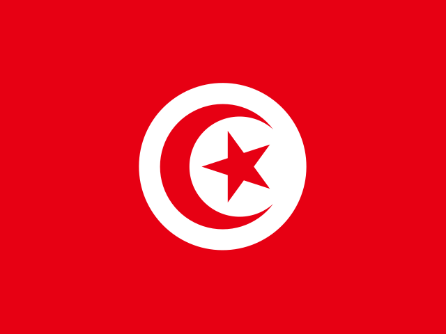

Question 141Verified completed result

Flag / Country🟩 Independent
Your answer: ItalyCorrect: Italy
Capital🟩 Independent
Your answer: RomeCorrect: Rome
Language🟩 Independent
Your answer: ItalianCorrect: Italian
Batch 15 · Q141–Q150 · 19 October 2026 · 30/30 Independent
| Score | Flags / Country | Capitals | Languages |
|---|---|---|---|
| Pure | 10/10 (100%) | 10/10 (100%) | 10/10 (100%) |
| Pure + Assisted | 10/10 (100%) | 10/10 (100%) | 10/10 (100%) |
| Independent | 10 | 10 | 10 |
| Assisted | 0 | 0 | 0 |
| Wrong | 0 | 0 | 0 |
| Cancelled | 0 | 0 | 0 |
| Score | Flags / Country | Capitals | Languages |
|---|---|---|---|
| Pure | 150/150 (100%) | 150/150 (100%) | 150/150 (100%) |
| Pure + Assisted | 150/150 (100%) | 150/150 (100%) | 150/150 (100%) |
| Independent | 150 | 150 | 150 |
| Assisted | 0 | 0 | 0 |
| Wrong | 0 | 0 | 0 |
| Cancelled | 0 | 0 | 0 |


Accepted phonetic Georgia / Tbilisi / Georgian variants


Accepted Mogadishu / Muqdisho phonetic spelling

Cape Town legislative capital; Afrikaans and English both valid



Luxembourg / Luxembourgish phonetic spelling accepted
| Q | Your Country | Correct Country | Flag | Your Capital | Correct Capital | Capital | Your Language | Correct Language(s) | Language |
|---|---|---|---|---|---|---|---|---|---|
| 141 | Italy | Italy | 🟩 Independent | Rome | Rome | 🟩 Independent | Italian | Italian | 🟩 Independent |
| 142 | Venzuela | Venezuela | 🟩 Independent | Caracas | Caracas | 🟩 Independent | Spanish | Spanish; Indigenous languages (recognized) | 🟩 Independent |
| 143 | Gerogia | Georgia | 🟩 Independent | Tblisis | Tbilisi | 🟩 Independent | Gerogian | Georgian | 🟩 Independent |
| 144 | Nigeria | Nigeria | 🟩 Independent | Abuja | Abuja | 🟩 Independent | English | English | 🟩 Independent |
| 145 | Somalia | Somalia | 🟩 Independent | Mqadeshu | Mogadishu | 🟩 Independent | Arabic | Somali; Arabic | 🟩 Independent |
| 146 | South africa | South Africa | 🟩 Independent | Cape town | Pretoria / Cape Town / Bloemfontein | 🟩 Independent | Engliah-afrikaans | Zulu; Xhosa; Afrikaans; English; Northern Sotho; Southern Sotho; Tswana; Tsonga; Swati; Venda; Ndebele; South African Sign Language | 🟩 Independent |
| 147 | Tunisia | Tunisia | 🟩 Independent | Tunis | Tunis | 🟩 Independent | Arabic | Arabic | 🟩 Independent |
| 148 | Lebanon | Lebanon | 🟩 Independent | Beiruit | Beirut | 🟩 Independent | Arabic | Arabic | 🟩 Independent |
| 149 | Belgium | Belgium | 🟩 Independent | Brussels | Brussels | 🟩 Independent | French | Dutch; French; German | 🟩 Independent |
| 150 | Luxemborg | Luxembourg | 🟩 Independent | Luxemborg | Luxembourg | 🟩 Independent | Luxemborgish | Luxembourgish; French; German | 🟩 Independent |
All 30 components Independent, no clues. Phonetic variants accepted including Gerogia / Tblisis / Gerogian, Somalia Mqadeshu for Mogadishu, South Africa Cape Town with English/Afrikaans, and Luxemborg / Luxemborgish.
150 / 195 countries · Batch 15 of 20 complete · 45 remaining
Combined Pure 450/450: Flags 150/150; Capitals 150/150; Languages 150/150.